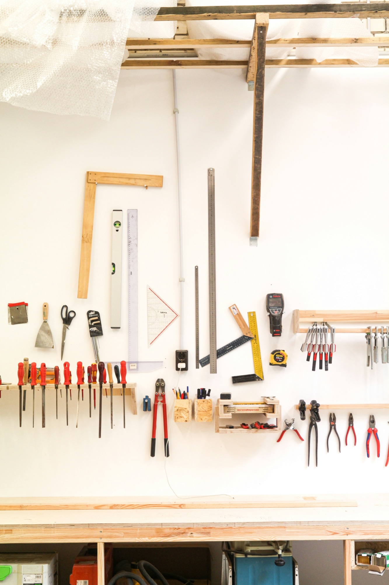
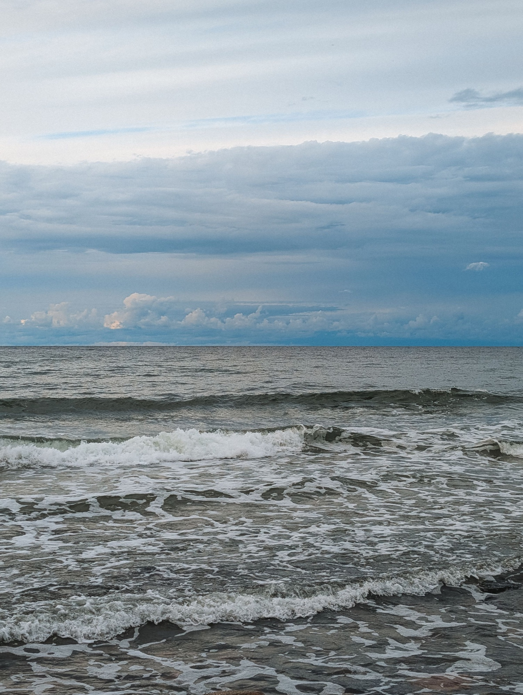
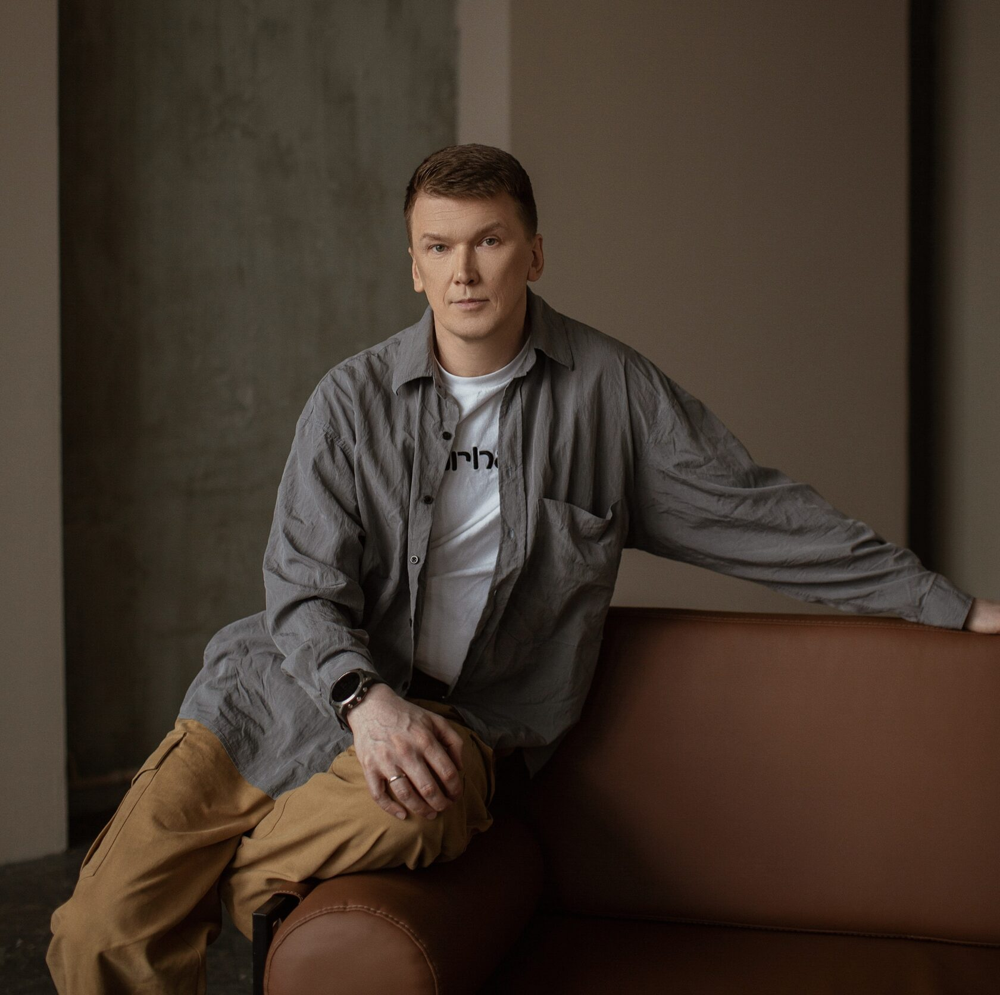
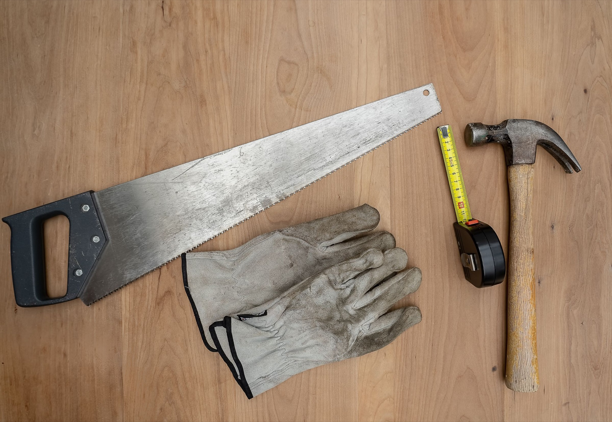

Как проходят 4 дня
Вы работаете в команде: она поддерживает и берёт на себя часть нагрузки. Вместе разбираете житейские задачи участников с помощью собранного инструмента.
В расписании
обедыранний отбоймного свободного времени



Инструмент управления под вашу ситуацию, собранный в спокойном ритме

За 4 дня вы с командой соберёте инструмент для управленческих решений и тут же проверите его на задачах участников. Ведёт практикум Константин Орлов, Онтоклуб «108».
Привычные правила управления складывались в 90-е и нулевые, когда рынок рос, что ни делай: с плохим управлением компания вырастала вдвое, с хорошим — в 20 раз.
Константин Орлов сравнивает эти правила с диетой из нашего детства: всем морковка для глаз и черника для роста.
Сегодня питание подбирают под возраст, сезон, нагрузку и состояние человека. С управлением так же: подходящий способ зависит от того, что у вас сейчас.
Инструмент, который подбирает приёмы управления под вашу ситуацию
Вы описываете ему ситуацию: стадию рынка, стадию развития компании, свой характер руководителя. Из всего, что менеджмент накопил за 150 лет, он подбирает 2 приёма именно под неё. Каждый приём описан понятным языком.
Он работает в трёх направлениях
Ваше состояние и то, как вы думаете и решаете.
Людьми и командами ИИ-агентов.
Всем, что снаружи вас и команды: рынком и клиентами.
Вы работаете в команде: она поддерживает и берёт на себя часть нагрузки. Вместе разбираете житейские задачи участников с помощью собранного инструмента.
В расписании

Впервые побывал на форсайт-игре участником в 1996 году, с 2002 года организует и проводит игры сам. Практикум вырос из его исследования: как свести всё, что накопил менеджмент, к нескольким понятным проекциям.
«я из пешек делаю ферзей самостоятельных, которые сами принимают решения»

Когда появится задача, он подскажет приёмы и первые шаги.
Первые свои задачи вы решите на практикуме вместе с командой.
Участники прошлых игр Орлова рассказывают, что понятое на игре позже распаковывается и превращается в практику.
При регистрации до 15 октября — 54 000 ₽